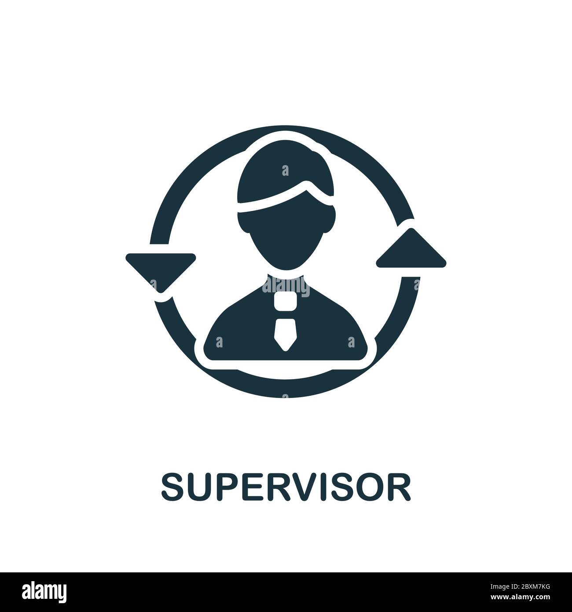

As an supervisor User, your contributions are integral to ensuring smooth assembly line operations, promoting productivity, and driving the success of the manufacturing process.
Owner of the Versatile Garments Ltd.

Who is Supervisor?
A supervisor is a key member of the assembly line management team who oversees the day-to-day operations, ensuring smooth workflow and adherence to production targets. They provide guidance and support to workers, address issues promptly, and maintain quality control throughout the assembly process.
Responsibility
Description
Monitoring Workstations
Supervisors are responsible for closely monitoring the performance of workstations on the assembly line, ensuring that tasks are executed efficiently and meeting the required production targets.
Issue Resolution
They promptly address any issues or challenges that arise during production, such as worker learning difficulties, machine malfunctions, or line balancing problems, to minimize disruptions and maintain optimal productivity.
Quality Control
Supervisors are tasked with ensuring the quality of products by implementing quality control measures, conducting inspections, and promptly addressing any quality issues or rejections.
Backpropagation and Line Balancing
They utilize backpropagation information to identify congestion or bottlenecks in workstations and collaborate with the line chief and production manager to implement line balancing adjustments as necessary.
Reporting and Communication
Supervisors maintain effective communication with the line chief, production manager, and other team members, providing regular reports on production progress, challenges, and any adjustments required to meet production goals.